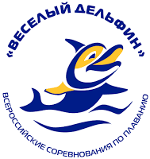
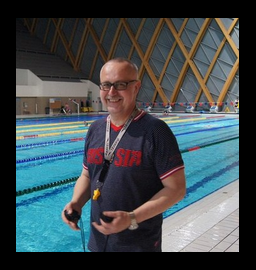
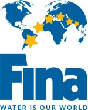

АРХИВ ФПРТ
2017 год
 |
20.12.2018 ПОЗДРАВЛЯЕМ АЛЕКСАНДРА КРАСНЫХ - призёра Чемпионата Мира, прошедшего в г.Ханчьжоу. Китай!!!
Александр в составе сборной России в эстафетном плавании 4х200м в/с завоевал серебряную медаль.
Всего 0.03сек. отделило нашу сборную от первого места! Поздравляем победителей и призеров международных соревнований «Кубок Владимира Сальникова», прошедшего в выходные дни в СПб!
|
|
|
20.12.2018 ВНИМАНИЮ ТРЕНЕРАМ И СПОРТСМЕНАМ Скачайте ОФИЦИАЛЬНЫЙ КАЛЕНДАРЬ СОРЕВНОВАНИЙ ПО ПЛАВАНИЮ в РТ на 2019г. Данная информация также постоянно доступна из меню сайта. |
04.12.2018
ПОЗДРАВЛЯЕМ НАШИХ СПОРТСМЕНОВ с достойными результатами на Всероссийских юношеских
соревнованиях по плаванию «Резерв России»
28.11-02.12 в г.Саранск, бассейн 25м!!!
6 спортсменов из Татарстана выполнили норматив на присвоения звания «Мастер Спорта России»:
|
|
23.11.2018
ФЕДЕРАЦИЯ ПЛАВАНИЯ РТ ПОЗДРАВЛЯЕТ КАМЕШКОВА АЛЕКСЕЯ АНТОНОВИЧА С 75 ЛЕТИЕМ! 10 ноября 2018 года бессменному руководителю клуба ветеранов спортивного плавания «ИДЕЛЬ» КАМЕШКОВУ АЛЕКСЕЮ АНТОНОВИЧУ исполнилось 75 лет! От участников клуба и от всего плавательного сообщества РТ и России мы поздравляем Алексея Антоновича!!! Желаем ЗДОРОВЬЯ!!! СЧАСТЬЯ!!! СПОРТИВНОГО ДОЛГОЛЕТИЯ!!! ДАЛЬНЕЙШИХ УСПЕХОВ НА ГОЛУБЫХ ДОРОЖКАХ!!! |
|
|
14.11.2018
ВНИМАНИЮ ТРЕНЕРАМ И СПОРТСМЕНАМ! |
|
23.11.2018
ФЕДЕРАЦИЯ ПЛАВАНИЯ РТ ПОЗДРАВЛЯЕТ ЮБИЛЯРА НОГУМАНОВА РАВИЛЯ С 50 ЛЕТИЕМ! РАВИЛЬ УЕЛОВИЧ НОГУМАНОВ является вице-президентом Общероссийской Общественной Организации «Федерация корэш России». Он имеет почетные звания мастера спорта Советского Союза по многоборью и мастера спорта России по плаванию. Является чемпионом России, Европы и мира, а также 27-кратным рекордсменом России, пятикратным рекордсменом Европы и рекордсменом мира по плаванию в категории MASTERS. С 2002 года неоднократно являлся председателем оргкомитета соревнований по плаванию MASTERS в России. Награжден медалью FINA MASTERS. Источник. |
|
|
14.11.2018
ПО ИТОГАМ ПРОШЕДШЕГО 7-12 НОЯБРЯ ЧЕМПИОНАТА РФ ПО ПЛАВАНИЮ В Г.КАЗАНЬ , наша команда заняла 3
общекомандное место среди регионов России, пропустив г.Москва и С-Пб. Это второй раз в истории чемпионатов России.
Мы подтвердили наше высокое место в российском плавании. Спасибо спортсменам, родителям, тренерам
и спортивным функционерам за высокие результаты! Только объединившись в общей цели и усилиях
стал возможен такой результат! Наилучшие успехи у Красных Александра, он занял первое место и это единственная победа у нас в команде. Приходько Ирина 3 раза поднималась на пьедестал почета. Два наших спортсмена выполнили норматив и попали в сборную России для участия в ЧМ на короткой воде 11-16 декабря в г.Ханчжоу, Китай. Это Красных Александр и Тарасевич Григорий. Поздравляем всех любителей и профессионалов спортивного плавания и пожелаем нашим пловцам успехов в будущих стартах! |


|
08.11.2018
ПЕРВЫЙ ЖЕ ДЕНЬ ЧР ПО ПЛАВАНИЮ ПРИНЁС ЗОЛОТУЮ МЕДАЛЬ В КОПИЛКУ СБОРНОЙ КОМАНДЫ РТ! Поздравляем спортсмена , тренера и всё татарстанское плавание с успешным стартом Александра Красных ! Александр стал Чемпионом России на дистанции 400м в/c с результатом 3.36,84сек. и выполнил отборочный норматив для попадания в национальную сборную и участия на Чемпионате Мира, который состоится в декабре в КНР. Пожелаем всей нашей команде успешных стартов! В этом году наши спортсмены собрались большой дружиной, нормативы попадания на ЧР был выполнен 84-мя спортсменами РТ! Источник. |
|
|
22.10.2018 ПОЗДРАВЛЯЕМ СПОРТСМЕНОВ, ТРЕНЕРОВ И ВСЕХ ЛЮБИТЕЛЕЙ СПОРТИВНОГО ПЛАВАНИЯ С УСПЕШНЫМ ВЫСТУПЛЕНИЕМ
СБОРНОЙ ТАТАРСТАНА НА ЗОНАЛЬНОМ ЧЕМПИОНАТЕ РОССИИ В Г.САРАНСК! Подробный отчёт с соревнований будет опубликован позже. |
|
|
20.10.2018 ВНИМАНИЮ ТРЕНЕРАМ И СПОРТСМЕНАМ! РЕЗУЛЬТАТЫ ПЕРВЕНСТВА Г.КАЗАНЬ ПО ПЛАВАНИЮ 2018г. |
|
|
20.10.2018 ВНИМАНИЮ СПОРТИВНЫМ СУДЬЯМ ПО ПЛАВАНИЮ! Ознакомьтесь с приказом ФПРТ №11/10 от 15.10.2018г. о сдаче судейского зачёта: 11 и 25 октября 2018г. Федерация плавания РТ проведёт судейский семинар с последующей сдачей зачёта. Ознакомьтесь с информацией о месте, времени и теме проведении семинара. |
|
|
ВНИМАНИЮ ТРЕНЕРАМ И СПОРТСМЕНАМ!
Информация о проведении Чемпионата РТ по плаванию-2018
который состоится 19-22 сентября 2018г. в г.Казань, КБП «Акчарлак» бассейн 25М:
|


|
ВПЕРВЫЕ В ИСТОРИИ В Г.КАЗАНЬ СОСТОЯЛСЯ ЭТАП КУБКА МИРА ПО ПЛАВАНИЮ FINA! Этот этап является первым и открывает серию международных стартов в новом спортивном сезоне. От Татарстана в нём участвовало 38 спортсменов, 4 участника добились призовых высот. Это при том, что 2 сильнейших спортсмена не участвовали соревнованиях по причине индивидуальных планов подготовки, это: Красных Александр и Максумов Эрнест. Поздравляем призёров КМ по плаванию FINA:
Напоминаем всем любителем спорта, что в ноябре у нас пройдёт Чемпионат РФ. Эти соревнования будут отборочными для попадания в национальную сборную для участия в ЧМ по плаванию на короткой воде. Приходите болеть и поддерживать наших спортсменов!!! |
|
11.08.2018
Федерация Плавания РТ от всей души поздравляет всех посетителей нашего сайта с Всероссийским Днём Физкультурника! С днем физкультурника я поздравляю Всех, кто спортивен, активен и смел. И в этот день вам, ребята, желаю, Я, чтобы каждый добиться сумел Формы физической непревзойденной, Чтобы легко все решались дела, И силы воли всегда закаленной – Чтоб уверенность не подвела! |
| ПОЗДРАВЛЯЕМ КУИМОВА ЕГОРА и его тренера Гизатуллина Эдуарда с серебряной наградой Чемпионата Европы-2018! Егор взял серебро в составе комбинированной мужской эстафетной четвёрки 4х100м с результатом 3.32,03сек. Наши поздравления также всему коллективу спорт.школы «Касатка» с успехом воспитанника! Источник. |
 |
ПОЗДРАВЛЯЕМ ГРИГОРИЯ ТАРАСЕВИЧА и его тренера Аркадия Тарасевича с серебряной наградой на Чемпионате Европы! Григорий стал серебряным призёром в предварительном заплыве в смешанной комбинированной эстафете 4х100м. с новым рекордом России – 3.42,71сек! Источник. |
|
|
ВНИМАНИЮ ТРЕНЕРАМ И СПОРТСМЕНАМ! Предлагаем Вашему вниманию информацию о проведении соревнований КУБОК РТ ПО ПЛАВАНИЮ который пройдёт с 30 мая по 02 июня 2018г. в г.Казань, КБП «Акчарлак» бассейн 50м:
|
|
|
Информация по проведению ПЕРВЕНСТВА ДЮСШОР «ДЕЛЬТА» «ОЛИМПИЙЦЫ СРЕДИ НАС!», спортсмены 2007-2009г.р. 01-02 июня 2018г. КСК «Олимп», бассейн 50м.:
|
|
|
ПОЗДРАВЛЯЕМ ГРИГОРИЯ ТАРАСЕВИЧА с успешным выступлением на престижных соревнованиях TYR Pro Swim Series 2018 в Индианаполисе! Гргорий стал вторым на дистанции 200м на спине с результатом 1.59,39сек. и финишировал третьим на дистанции вдвое короче, показав время 54,42сек. |
|
|
22.05.2018 22 МАЯ 2018г. СОСТОЯЛАСЬ ОТЧЁТНО-ВЫБОРНАЯ КОНФЕРЕНЦИЯ ФПРТ. Новым президентом Федерации плавания единогласно избран Кузюров Равиль Афраимович - министр лесного хозяйства РТ. Хамаев Азат Киямович по результатам деятельности на посту президента ФПРТ был награждён от имени министерства по делам молодёжи и спорта РТ за плодотворную работу с 2014 по 2017гг. Источник. |
|
|
РЕЗУЛЬТАТЫ ПЕРВЕНСТВА ГБУ ДО «РДЮСШ» по водным видам спорта «АКВАТИКА», спортсмены 1999-2007г.р. 16-18 мая 2018г. УСК «ДВОРЕЦ ВОДНЫХ ВИДОВ СПОРТА» , дорожка 25м.:
|
09.05.2018
ПОЗДРАВЛЯЕМ юношескую сборную команду Татарстана с успешным выступлением на первенстве России среди юниоров 2018г.!
|


 |
08.05.2018
ВНИМАНИЮ ДИРЕКТОРАМ СПОРТИВНЫХ ШКОЛ, ТРЕНЕРАМ И СПОРТСМЕНАМ! Обращаем Ваше внимание на новые правила присвоения разрядных нормативов СОГЛАСНО ОБНОВЛЁННОЙ СИСТЕМЕ ЕВСК. |
|
28.04.2018
УВАЖАЕМЫЕ ЛЮБИТЕЛИ ПЛАВАНИЯ! Предлагаем Вашему вниманию информацию по заключительному этапу Всероссийских соревнований по плаванию с участием иностранных спортсменов «Mad Wave Challenge 2018 Казань», который состоится в Казани с 4 по 6 мая 2018г. в УСК «Буревестник» ул.Деревня Универсиады д.33, открытие 4 мая в 12-00, вход свободный!
|


|
|
12.04.2018
С 20 по 25 апреля 2018 года проходит ЧР по плаванию:
|
|
В г.Альметьевск появится единственный в Татарстане 50-метровый бассейн из нержавеющей стали.
Бассейн «Мирас» построят в соответствии со всеми мировыми стандартами FINA и установят современные системы хронометража
Окончание строительства «Мираса» запланировано на конец августа 2018г. Отметим, что сейчас в нефтяной столице занимаются плаванием порядка 750 детей, однако после открытия такого бассейна эта цифра может удвоиться - благодаря «Мирасу» и «Татнефти». |


|  |
15.04.2018
На Всероссийских соревнований по плаванию «Веселый Дельфин» в г.Санкт-Петербург, 11-15 апреля 2018г.
принимали участие 870 человек из 69 команд России (по 8дев. и 8юнош.).
Команда РТ состояла из 8 юношей и 8 девушек ( 8 кмс, 8 1-2 разряды).
Спортсмены соревновались в эстафетном плавании 4 х50м всеми способами плавания
и в личных дистанциях: 100м, 200м комплекс и 800м вольный стиль. Итоги выступления:
|


|
|
12.04.2018
Поздравляем Григория Тарасевича с победами на международном турнире в Швеции на соревнованиях Swim Open!
Григорий победил
на дистанциях 50м и 100м на спине и
стал вторым на дистанции 200м!!!
Стало известно, что Григорий выступит на Чемпионате России на трех дистанциях в плавании: 50, 100 и 200м на спине. Чемпионат России по плаванию пройдет 20-25 апреля и станет квалификационным для участия в чемпионате Европы, который пройдет в г.Глазго в августе. |
|
02.04.2018
ДОРОГИЕ МАСТЕРА И ЛЮБИТЕЛИ ПЛАВАНИЯ! Предлагаем Вашему вниманию информацию о проведении соревнования по плаванию «SPRINTMASTERS» для пловцов старше 25 лет (категория «Мастерс»), которое состоится 14 апреля 2018г. в г.Казань, КБП «Акчарлак» бассейн 50м:
|
|
|
01.04.2018
|
|
|
30.03.2018
Ознакомьтесь с информацией о проведении Открытых республиканских соревнований по плаванию «Юные Надежды»,
спортсмены 2006-2007г.рожд., которые состоятся с 30 по 31 марта 2018г.
в г.Казань, КБП «Акчарлак» бассейн 50м:
|
|
29.03.2018
Первенство России по плаванию среди лиц с интеллектуальными нарушениями прошло с 19 по 23 марта в г.Киров.
В соревнованиях приняли участие 145 спортсменов из 29 регионов России.
Победители Чемпионата вошли в состав сборной команды России для участия в летних европейских играх INAS. Республику Татарстан в этом году представляли Владимир Сидоров и Николь Газизуллина. Спортсмены готовились к этим соревнованиям и результаты не заставили себя долго ждать: Николь выполнила норматив 1-го юношского разряда, а Володя остановился в одной десятой от КМС и занял 4 место на дистанции 50м на спине. В этом году в нашей Республике появилась Федерация ЛИН, с чем поздравляем наших спортсменов и желаем им новых отличных результатов и новых побед! |


|
|
22.02.2018
УВАЖАЕМЫЕ ПЮБИТЕЛИ ПЛАВАНИЯ! С 1 по 3 марта 2018г. пройдёт Первенство Республики Татарстан среди юношей 15-16 лет и девушек 13-14 лет в г.Казань, бассейн 50м |
|
|
17.02.2018
УВАЖАЕМЫЕ ДРУЗЬЯ! С 20 по 22 февраля 2018г. состоится Первенство Республики Татарстан среди юношей 13-14 лет и девушек 11-12 лет в г.Казань, бассейн 50м «Акчарлак» |
|
|
29.01.2018
УВАЖАЕМЫЕ ЛЮБИТЕЛИ ПЛАВАНИЯ! С 1 по 3 февраля 2018г. будет проходить Чемпионат РТ по плаванию в г.Казань, в плавательном комплексе «Акчарлак», по адресу: г.Казань ул.Кул-Гали. д.13А Начало соревнований: 10-00 утра ежедневно. Открытие (первый день): 9-45 утра. Ждём Вас! |
|
|
29.01.2018
Уважаемые тренеры и спортсмены!
|
|
|
16.01.2018 Уважаемые Коллеги!
Большинство тренеров и специалистов плавания России заметили ошибки в новой ЕВСК и
не согласны не только с новой ЕВСК, но с самой схемой её формирования.
Если Вы хотите что-то изменить, предлагаю Вам присоединиться к инициативной группе по работе над новой ЕВСК.
Итак, согласно п.7 Положения о ЕВСК: «Изменения в нормы, требования и условия их выполнения вносятся Министерством по инициативе общероссийских спортивных федераций или федеральных органов, но не ранее чем через 1год после их включения в ЕВСК - если это не связано с изменением правил видов спорта[1]...» Мы не можем внести изменения раньше чем через год, поэтому я прошу Вашей помощи, чтобы ничего не упустить. Сейчас, не торопясь, изучите Положение о ЕВСК и таблицу ЕВСК и вышлите мне Ваши предложения и поправки. Я сделаю свод и вынесу данный вопрос на Президиум ВФП (поскольку изменения вносятся по инициативе, прежде всего федерации) Жду Ваших предложений на адрес: erik.akchurin@mail.ru С уважением, Акчурин Эрик Фагмиевич. |
|
|
15.01.2018
УВАЖАЕМЫЕ УЧАСТНИКИ ЧЕМПИОНАТА РЕСПУБЛИКИ ТАТАРСТАН ПО ПЛАВАНИЮ -2018!
ОБРАТИТЕ ВНИМАНИЕ: ДОПУСК К СОРЕВНОВАНИЯМ ПО СПОРТИВНОЙ ПОДГОТОВЛЕННОСТИ СПОРТСМЕНОВ - НЕ НИЖЕ 1 РАЗРЯДА!!! |
|
31.12.2017 Дорогие Друзья!
Вот и заканчивается 2017 год, который оказался дополна насыщен событиями:
мы участвовали в соревнованиях, обрели новых чемпионов и перспективных спортсменов.
Были и утраты: к огромному сожалению, в этом году ушёл из жизни наш Главный тренер Цыганко Василий Иванович...
На сегодня Татарстан проводит соревнования самого высокого мирового уровня по плаванию. Продолжают вводиться в строй новые объекты плавательной инфраструктуры. Результаты не заставляют себя ждать - Татарстанцы всё чаще заявляют о себе на всех спортивных мероприятиях. В наступающем 2018 году желаю Вам, дорогие друзья, дальнейших успехов в спорте, учёбе и жизни! Вместе мы движемся вперёд, к новым свершениям и победам! С уважением, Хамаев Азат Киямович, Президент Федерации Плавания РТ. |
| 28.12.2017 Подарки Федерации плавания РТ на НГ принесли из Мин.Спорта России! Нашим спортсменам - Тазову Вячеславу и Королёву Никите присвоены звания: «Мастер спорта международного класса России»! Поздравляем спортсменов, тренеров и всех, кто внёс свой вклад к достижению данного результата! |
| 27.12.2017 Поздравляем Григория Тарасевича и его тренера, Аркадия Тарасевича с приводнением спортсмену почетного звания: «Заслуженный мастер спорта РФ»! Напомним, что накануне Министерство спорта РФ опубликовало Приказ №162 нг от 21 декабря 2017г. «О присвоении почетного спортивного звания «Заслуженный мастер спорта России» Григорию Тарасевичу, Олегу Костину и Андрею Арбузову. Источник. |
|
|
24.12.2017
Министерство спорта РТ по традиции подвело спортивные итоги завершающегося 2017 года.
Для спортивного плавания уходящий год стал насыщен событиями, победами, открытиями и другими событиями.
Своих обладателей нашли и награды в номинации «Лучшая федерация Республики Татарстан по олимпийским видам спорта». Ими признаны: Федерация плавания РТ , Федерация Стендовой и пулевой стрельбы РТ, Федерация лыжных гонок и биатлона РТ. Неоднократно были отмечены успехи по плаванию и в других номинациях:
|
|
|
23.12.2017
Поздравляем Обшарова Александра с успешным выступлением на Всероссийских соревнований среди юношей и девушек в
г.Астрахань, 17-20 декабря 2017г.
Александр показал очень хороший результат на престижной стометровке в/с и занял 3е место в личном зачёте!
Официальный протокол. |
|
19.12.2017
Поздравляем Александра Красных со второй медалью на завершившемся ЧЕ-2017 на короткой воде!
Александр на своей любимой дистанции 200м в/с финишировал с результатом 1.42,22сек., завоевав «серебро». «...время показал точно не свое, был готов плыть быстрее», – скажет в последствии наш спортсмен. Также предлагаем Вашему вниманию ссылку на итоги выступления сборной РФ на ЧЕ-2017 и фото-подборку с соревнований: |


| 14.12.2017 Поздравляем всех любителей спортивного плавания Татарстана с победой Александра Красных!!! Александр победил с хорошим отрывом от соперников на Чемпионате Европы на дистанции 400м в/с с результатом 3:35,51сек. Александр ещё поплывет свою любимую дистанцию 200м в/с в заключительный день, 15 декабря. Ждём новых побед!!! Официальный протокол. |
|
13.12.2017
Александр Красных - участник финала на 400м в/с
старт в 19:32 по московскому времени, «болеем за наших»!!!
Напоминаем с 13 по 15 января в г.Копенгаген, Дания проходит ЧЕ по плаванию на короткой воде, в составе сборной 2 наших спортсмена: |
| 12.12.2017 В г.Казань с 8 по 10 декабря в бассейне УСК «Буревестник» прошёл 10й, юбилейный Кубок на призы 4-х кратного Олимпийского Чемпиона Александра Попова. В соревнованиях приняли участие спортсмены в возрасте 12-15 лет с уровнем мастерства не ниже 1 разряда. Уже по традиции, состоялись мастер-классы от самого Александра Попова и других топ-пловцов, открытые тренировки, а также фото- и автограф-сессии со знаменитыми спортсменами. Источник. |
| 12.12.2017 В Екатеринбурге с 8 по 10 декабря 2017г. прошли Всероссийские соревнования по плаванию среди юниоров и юниорок, в котором участвовали 426 спортсменов из 50 регионов России. По итогам соревнований было разыграно 40 комплектов наград. Поздравляем наших спортсменов и их тренеров, показавших достойные результаты на соревнованиях! Скачайте результаты соревнований. |
|
|
03.12.2017 Уважаемые друзья, предлагаем вашему вниманию итоги Первенства РТ по плаванию 2017г., проходившего в г.Казань, в спорткомплексе «Акчарлак» с 30 ноября по 2 декабря 2017г.: |
|  | 30.11.2017 С прискорбием сообщаем - на 61 году жизни после болезни скончался главный тренер РТ по плаванию Цыганко Василий Иванович, заслуженный работник физической культуры РТ. Федерация плавания и вся спортивная общественность выражает соболезнования родным и близким. |
| 29.11.2017 «Привычное «Золото», «Татарстанцы в родном бассейне смотрелись достойно», «Каждый год зажигает новые таланты» - что пишет наша пресса о выступлении татарстанцев на завершившемся в Казани ЧР по плаванию 2017г. |
|
|
25.11.2017
Подведём итоги Чемпионата России, три первых места, это:
Очередной рекорд поставила наша команда: к соревнованиям были допущены по своим результатам 67 спортсменов от республики. Спасибо тренерам и тем, кто участвует в подготовке наших спортивных кадров!!! |


|
|
25.11.2017
Пятый заключительный день прошёл для нашей команды положительно:
3-е место на 100м в/с завоевал Никита Королёв, этим самым подтвердил
своё железное место в эстафетной четверке лучших спринтеров страны.
Поздравляем спортсмена и тренера!
Порадовали нас и девушки, заняв почетное 3-е место в эстафете 4х50м в/ст. Поздравляем!!! Источник. |
| 20.11.2017 Накануне открытия Зимнего ЧР спортивную общественность Республики порадовала новость о продолжении программы Президента РТ Минниханова Р.Н. В республике будут построены ещё 8 плавательных бассейнов для полного покрытия всех районов. Мы верим, что спортивные объекты после открытия будут наполнены детским шумом, а также активной тренировочной и спортивной деятельностью! Спасибо за добрые дела нашему руководству Республики! Наши спортсмены своими победами поблагодарят Президента РТ Минниханова Р.Н. за его внимание к спортивным делам родной республики! |
|
|
20.11.2017
Поздравляем спортсмена Красных Александра
с победой на ЧР и отбором в основной состав
для участия в Чемпионате Европы на короткой воде 2017г., который пройдёт в декабре в г.Копенгаген!
Пожелаем ему ещё побед и успешного выступления на Европе!
Протокол.
Во второй день соревнований всех порадовал наш земляк, спортсмен из Альметьевска Валиахметов Эдуард! В красивой борьбе он одержал победу на одной из самых трудных дистанций - 400м компл.плав. Он также выполнил норматив для попадания в сборную команду для участия на ЧЕ 2017!!! Протокол. В этот же день сборная команда РТ в смешанной эстафете 4х100м вырвала 3 место у Белгородской обл. и приплыла вслед за Москвой и Новосибирской обл. Молодцы! Протокол. Внимание любителям плавания: соревнования продлятся до среды включительно, приходите в ДВВС и поддержите наших спортсменов!!! |
|
|
14.11.2017 Уважаемые друзья и коллеги, Скачайте официальный календарь соревнований по плаванию РТ на 2018 год. |
| 04.11.2017 Поздравляем Кузнецова Сергея Васильевича с присвоением ему почетного спортивного звания «Заслуженный тренер России»! Министерство спорта Российской Федерации опубликовало Приказ № 141 нг от 27 октября 2017 года «О присвоении почетного спортивного звания «Заслуженный тренер России» за подписью министра спорта П.А. Колобкова. Источник. |
|
|
24.09.2017 Уважаемые друзья и любители плавания! Завершился чемпионат и первенство г.Казань. Соревнования проходили в комплексе «Акчарлак» с 19 по 21 октября 2017г. Предлагаем вашему вниманию результаты соревнований: |
| 14.10.2017 Уважаемые друзья и любители плавания! Впервые в г.Казань пройдет Кубок 4-х кратного олимпийского чемпиона А.Попова с участием не менее знаменитых гостей и друзей великого спортсмена. Примите участие в нашем спортивном мероприятии! |
|
|
07.10.2017 Поздравляем Казань и всех любителей спортивного плавания с очередным крупным соревнованием , которое пройдет в г.Казань уже в 2018 году! Источник сообщает , что столица Татарстана с 2018 по 2022 годы будет принимать очередной водный турнир — этап Кубка мира по плаванию FINA airweave, который раньше проходил в Москве. |
|
|
30.09.2017 ВНИМАНИЕ тренеров и судей по спорту РТ! В период проведения Чемпионата России по плаванию 18-24 ноября 2017г. состоится Всероссийский семинар для судей по плаванию в бассейне и на открытой воде. Программа семинара и условия участия будут опубликованы на сайте Всероссийской федерации плавания в разделе «Судьям». Заявки на участие в семинаре необходимо подавать Председателю судейской коллегии спортивных судей РТ Камешкову Л.А. |
|
|
24.09.2017 Уважаемые друзья и любители плавания! Завершился Чемпионат РТ 2017г. Соревнования проходили в комплексе «Акчарлак». главный судья соревнований - судья Всероссийской категории Камешков Л.А. |
|
|
29.08.2017Историческое событие в жизни спортивного плавания Татарстана: первый рекорд России в плавании принес Куимов Егор в родную республику!!! Поздравляем спортсмена с выдающимся достижением, благодарим тренера: Гизатуллина Эдуарда, родителей и всех, кто приложил немало усилий для достижения важного результата! Куимов Егор является воспитанником спортивной школы «Касатка», школы с большой историей и традициями. Поздравляем директора Ионова Игоря Николаевича и весь коллектив школы! Информагенство. |
| 28.08.2017 Куимов Егор завоевал 2 место на проходящем в Индианаполисе Юниорском Первенстве Мира 2017!!! Егор установил рекорд России на дистанции 100м баттерфляй с результатом 51,16сек! От всей души поздравляем спортсмена и тренеров! Официальный сайт соревнований. |
| 25.08.2017 Сразу 2 спортсмена из Татарстана в одной эстафете стали призерами Юниорского Первенства Мира! В смешанной комбинированной эстафете 4х100 м Полина Егорова, Евгений Сомов, Егор Куимов и Василисса Буйная завоевали бронзовую медаль, установив юношеский рекорд Европы – 3.48,32! в предварительном заплыве выступил Глеб Карасёв, которому также будет вручена бронзовая медаль. Поздравляем ребят и пожелаем ещё побед на этих важных стартах! |


{kind=link}
{kind=link}
{kind=link}
{kind=link}
{kind=link}
{kind=link}
|
|
15.08.2017 Александр Красных – победитель третьего этапа КМ 2017г.! В г.Эйндховен в первый день 3 этапа КМ FINA/airweave по плаванию Александр Красных первенствовал на дистанции 400м в/с результатом 3.38,35сек. В финале на 100м на спине Григорий Тарасевич занял пятое место с результатом 51,13сек. Источник. |
| 07.08.2017 Куимову Егору присвоено спортивное звание: «Мастер спорта международного класса»! Поздравляем спортсмена, тренера, спортивный коллектив, в котором готовят спортсмена, а также его родителей! Желаем дальнейших побед Егору на голубых дорожках! |
|
|
06.08.2017
Александр Красных вновь радует своих болельщиков!
|
|
|
01.08.2017
Федерация плавания РТ выражает благодарность всем причастным к победам наших спортсменов!
Отдельно благодарим Президента Федерации, Хамаева Азата Киямовича за активную позицию,
отстаивание интересов спортивного плавания в республике, привлечение спонсоров,
возможность спортсменам плодотворно тренироваться и показывать высокие результаты!
Также отдельное спасибо нашим спонсорам, которые верят в плавание и продолжают оказывать
безвозмездную финансовую помощь!!! Большое вам спасибо.
|
01.08.2017
Подведем итоги прошедшего Чемпионата мира по водным видам спорта.
От РТ участвовали 3 спортсмена: Красных Александр, Королев Никита, Тарасевич Григорий.
Все спортсмены достойно выступили и показали свои лучшие достижения.
|
| 01.08.2017 Третья медаль в копилку Республики Татарстан!!! Участник эстафеты 4х100м комб. Тарасевич Григорий в предварительном заплыве стал бронзовым призером! Ура! Поздравляем спортсмена, его тренера Аркадия Тарасевича и его маму, активно участвующих в спортивной жизни сына! Источник |
| 29.07.2017 На Чемпионате мира день триумфа российского плавания!!! 3 индивидуальных золота и серебро в эстафете 4х200м в/с! Наш земляк Александр Красных вновь порадовал родную республику! Саша плыл последним этапом в эстафете и помог национальной команде РФ завоевать серебрянные награды. Федерация Плавания поздравляет всех жителей Татарстана с достойной наградой!!! Еще раз поздравляем спортсмена и его тренера, родных с высоким достижением! До конца чемпионата еще один наш соотечественник выступит в эстафете 4х100м комб. Поболеем за Королёва Никиту и пожелаем ему победы! Источник |
| 26.07.2017 Ставший бронзовым призером чемпионата мира по водным видам спорта в Будапеште Александр Красных заявил, что у него в свое время была возможность переехать и тренироваться за рубежом, но он полностью доволен сотрудничеством с тренером Сергеем Тарасовым. «У меня была возможность уехать за рубеж тренироваться, но мой тренер меня целиком и полностью устраивает. У меня есть как спарринг-партнер Слава Андрусенко и мне этого хватает», - сообщил Красных журналистам. |
|
26.07.2017
Призер чемпионата Европы Григорий Тарасевич заявил, что изменил тактику в плавании на спине на 100м
в финале чемпионата мира по водным видам спорта в Будапеште.
«Попробовал сменить тактику, начал первый «полтинник» побыстрее, но, видимо, что-то не сбалансировал.
Очень интересно посмотреть, как смогу проявить себя на дистанции 50м. Но готовил я больше 100м.
В принципе, тройка призеров из фаворитов, ребята с именем, известные спинисты», -
сказал Тарасевич журналистам.
Тарасевич во вторник стал 5-м в этом виде программы. |
|
26.07.2017
Поздравляем всех профессионалов и любителей плавания с большим достижением и успехом!!!!
Впервые за всю историю мужского спортивного плавания, воспитанник школы плавания Татарстана достиг значительного успеха!
Александр Красных – бронзовый призер Чемпионата Мира по плаванию 2017, проходящего в Будапеште!
Дистанция: 200м в/с, результат: 1мин. 45,23сек.
Поздравляем спортсмена, первого тренера Кузнецова С.В., его родителей, жителей г.Бугульма и всех,
кто помог спортсмену добиться такого успеха! Болеем за наших!!!
От Татарстана участвуют три спортсмена, это: Александр Красных, Никита Королев и Тарасевич Григорий. Все - достойные спортсмены, показывают свои лучшие результаты.
|
|
|
24.07.2017
Организаторы ЧМ по плаванию на короткой воде-2022, который пройдет в Казани,
намерены увеличить число зрительских мест в бассейне. до 6 тыс.,
так заявил министр по делам молодежи и спорта РТ Владимир Леонов во время презентации заявки г.Казань в Будапеште.
Оргкомитет ЧМ по плаванию 2022г. в Казани также сохранит безвизовый режим для иностранных команд. |
|  | 17.07.2017 Казань примет ЧМ по плаванию на короткой воде 2022 года!!! На турниры претендовали: Казань, Гонконг, Тайбэй и Будапешт. Ранее в России ЧМ на короткой воде проводился в 2002 году в Москве. Отметим, что в 2015г. Казань принимала ЧМ по водным видам спорта. Министр по делам молодежи и спорта РТ Владимир Леонов подписал контракт и выступил с речью, в которой назвал Казань «...лучшим городом в мире». Также стало известно, что аналогичный турнир в 2024 году пройдет в Будапеште. Источник. |
03.07.2017
Поздравляем спортсменов сборной команды РТ с успешным выступлением на Кубке РФ в г.Москва 1-2 июля 2017г.!
|
03.07.2017
Поздравляем Куимова Егора и Карасева Глеба с успешным выступлением на первенстве Европы!
|
|
|
Начиная с 2013г. представители Федерации плавания попадают в ТОП ведущих спортивных деятелей Татарстана по итогам года. В этом году Федерацию представляет Максим Дедловский – главный тренер сборной команды Поволжской Академии спорта! Поздравляем его с хорошими достижениями и желаем дальнейшего продвижения наверх!!! Источник. |
|
|
30.06.2017 Поздравляем нашего спортсмена Карасёва Глеба и его тренеров - Алифашкиных с 3-м местом на юниорском Первенстве Европы в составе эстафеты сборной России! Соревнования проходят в г.Нетанья, Израиль с 28 июня - 2 июля 2017 года. Официальный сайт соревнований. |
 |
Российское антидопинговое агентство «РУСАДА» запустило дистанционную образовательную
антидопинговую Online-платформу для спортсменов и спортивного персонала,
доступную по адресу: rusada.triagonal.net
Согласно ст.18 Всемирного антидопингового Кодекса все подписавшиеся стороны Кодекса призваны пропагандировать и поддерживать активное участие спортсменов и спорт.персонала в реализации образовательных программ, ориентированных на спорт, свободный от допинга. Для прохождения курса Вам необходимо лично зарегистрироваться на сайте rusada.triagonal.net. Предлагается два вида курсов: Антидопинговый курс и Медицинский курс. По окончании обучения необходимо ответить на вопросы итогового теста, за успешное прохождение которого выдается электронный сертификат (копия сертификата будет также направлена в национальную спортивную федерацию и в РУСАДА). Наличие данного сертификата является необходимым для всех действующих российских спортсменов и спортивного персонала. |
|
|
01.06.2017 Уважаемые друзья, предлагаем Вашему вниманию стартовые протоколы Кубка РТ по плаванию. Бассейн МАУ ДО ДЮСШ «Дельфин» г.Наб.Челны, дата проведения: с 1 по 3 июня 2017г. |
|
|
22.05.2017
Поздравляем юношескую сборную РТ с успешным выступлением на этапе Спартакиады учащихся РФ!
Команда заняла 5 место среди 62 команд, 3 спортсмена выполнили норматив мастера спорта РФ, это:
|
|
|
16.05.2017 Вниманию всем коллегам! Для удобства оплаты членских взносов вводится дополнительный режим оплаты членских взносов для спортсменов и тренеров, получающих премии согласно «Положения о поощрениях». Скачайте бланк заявления (он также находится в разделе «Федерация плавания») Бланк необходимо заполнить, подписать и передать в бухгалтерию федерации. Для регистрации даты подачи и ускорения процесса можно передавать скан (фото) по e-mail или WhatsApp. Оригинал обязателен к представлению при первом возможном случае. |
|
|
17.05.2017
Вниманию спортсменам и тренерам!
Согласно «Положения о поощрениях» спортсменам и тренерам положены премиальные выплаты
от федерации за успешные выступления во второй половине 2016г.:
Бухгалтер Елена Клюшина elvl2006@mail.ru, т.9600484017. |
|
|
16.05.2017 Вниманию всем коллегам! Для удобства оплаты членских взносов вводится дополнительный режим оплаты членских взносов для спортсменов и тренеров, получающих премии согласно «Положения о поощрениях». Скачайте бланк заявления (он также находится в разделе «Федерация плавания») Бланк необходимо заполнить, подписать и передать в бухгалтерию федерации. Для регистрации даты подачи и ускорения процесса можно передавать скан (фото) по e-mail или WhatsApp. Оригинал обязателен к представлению при первом возможном случае. |
|
|
16.05.2017
Вниманию тренерам! В связи внесением изменений в положение
о присвоении спортивных разрядов, а также для облегчения
оформления документов при присвоении разрядов принят Приказ ФПРТ №37 от 04.05.2017г.
Уполномоченными для утверждения документов путем проставления визы и печати от лица ФПРТ являются директора спортивных школ г.Казань Камешков Л.А., Ионов И.А. и Чепик С.Ю. Приказ о их назначении будет передан в Мин.спорта РТ. |
{kind=link}
| 15.05.2017 Поздравляем спортсменов-ветеранов татарстанского клуба «Касатка» с успешным выступлением на Всемирных Играх «Мастерс» в г.Окленд (Новая Зеландия), где они завоевали три бронзовые медали! Подробная информация на сайте клуба «Касатка». Официальный сайт соревнований и результаты. |
|
|
05.05.2017 Поздравляем наших спортсменов, выполнивших норматив попадания в сборную Российской Федерации для участия во Всемирной Универсиаде 2017г., котрая будет проходить в городе Тайбэй, КНР с 19 по 30 августа! Источник. |
|
|
25.04.2017 Вниманию ветеранов плавания Республик Татарстан и Башкортостан! Положение о проведении Открытого Турнира по плаванию в категории «Мастерс» на призы основателя ДЮСШ г.Туймазы Шайдуллина Э.Б. Соревнования будут проводиться с 6 по 7 мая 2017г. |
|
|
19.04.2017 Поздравляем Валиахметова Эдуарда с победой на Первенстве России среди юниоров 17-18 лет на дистанции 400 м комплексным плаванием! Результаты победного заплыва. |
|
|
17.04.2017
В Москве только что закончился Чемпионат страны по плаванию.
На соревнованиях кроме медалей разыгрывалось право участия на ЧМ в г.Будапешт в июле 2017г.
Право представлять Россию завоевали три наших татарстанских спортсмена.
Это - Красных Александр на дистанциях 200 и 400м в/ст, Тарасевич Григорий на дистанции 50 и 100м в/ст, а Королев Никита занял третье место на 100м в/ст и обеспечил себе место в эстафетной четвёрке. Татарстанская сборная по плаванию впервые заняла почетное третье место в медальном зачете среди регионов России на Чемпионате страны, пропустив только Москву и С-Петербург. Поздравляем всех членов федерации с высоким достижением!!! Также, впервые спортсмены Татарстана заняли четыре первых места. Это - Красных Александр – на 400 и 800м в/ст, сборная РТ (Красных А., Тарасевич Г., Мухаметзянов Э. , Максумов Э.) в эстафете 4х200м в/ст, и Куимов Е. на дистанции 100м баттерфляй. Юный спортсмен Куимов Егор не только победил сильных спортсменов в абсолютном первенстве, но и установил юношеский рекорд Европы! Спасибо всем участникам чемпионата и всем, кто причастен к этому успеху! Подробный отчет о выступлении сборной будет публикован позже, более подробную информацию можно найти на сайте ВФП. |
|
|
13.04.2017
Королев Никита
занял 3-е место
на дистанции 100м в/с,
это место в сборной команде России для участия в эстафете на ЧМ в Будапеште!
Сборная РТ в составе: Максумов Эрнест, Тарасевич Григорий, Мухаметзянов Эмиль, Красных Александр - победила в эстафете 4х200м вольным стилем!!! |
|
|
11-12.04.2017
Поздравляем Красных Александра и Максумова Эрнеста,
занявших 1-е и 2-е место на дистанции 400м в/с на
отборочном чемпионате РФ в г.Москва!
Наши спортсмены показывают отличные результаты: Григорий Тарасевич, занял 2-е место на 100м, а Ирина Приходько - 3-е место на дистанции 200м на спине! |
|
|
29.03.2017 Внимание спортсменам, тренерам и спортивным работникам! Мин.спорта РФ опубликовало новое Положение о Единой всероссийской спортивной классификации (ЕВСК), которое вступит в силу 2 апреля 2017г. Нормативы будут опубликованы позднее. Источник. |
|
|
23.03.2017 Уважаемые друзья, Вашему вниманию информация по турниру «Юные надежды» среди спортсменов 2005-2006 годов рождения, который проходит 24-25 марта 2017г. в г.Казань: |
|
|
11.03.2017 Поздравляем спортсменов и тренеров сборной РТ по плаванию с успешным выступлением на Чемпионате и первенстве федеральных округов 2017года, прошедшим в г.Пенза! Результаты: |
|
|
10.03.2017 Григорий Тарасевич в 2016г. поступил в нашу Поволжскую Академию спорта. По обоюдному согласию Григорий перешёл в сборную РТ без перезачетов на другие регионы и выступает теперь под Татарстанским флагом. Болеем за наших ! |
|
|
03.03.2017 Уважаемые друзья, предлагаем вашему вниманию результаты лично-командного первенства РТ 2017г. среди среди юношей 2001-2002г. и девушек 2003-2004г.р., проходившего 2-4 марта 2017г. в г.Казань: |
|
|
03.03.2017
Скачайте Положение о проведении турнира по плаванию «Юные надежды»
25-27 марта 2017г.
среди детей 2005-2006г.
Бассейн 50м «Акчарлак». МАОУ ДОД ДЮСШ плавания «Касатка».
Результаты соревнований 2-4 марта 2017г. среди юношей 2001-2002г. и девушек 2003-2004г. рожд.: |
|
|
25.02.2017 Стартовый и Итоговый протокол 3-го дня открытого первенства РТ по плаванию 2017г. среди девушек 2005-2006г. и юношей 2003-2004г.рождения, проходящего 22-25 февраля в г.Набережные Челны. Бассейн 50м МАОУ ДОД ДЮСШ «Дельфин». |
|
|
24.02.2017 Результаты 2го дня с эстафетами, а также Результаты многоборья 2-го дня открытого первенства РТ по плаванию 2017г. среди девушек 2005-2006г. и юношей 2003-2004г.р. 22-25 февраля в г.Наб.Челны. Бассейн 50м МАОУ ДОД ДЮСШ «Дельфин». |
|
|
23.02.2017 Результаты 1-го дня с эстафетами, Стартовый протокол 1-го дня открытого первенства РТ по плаванию 2017г. среди девушек 2005-2006г. и юношей 2003-2004г.р. 22-25 февраля в г.Наб.Челны. Бассейн 50м МАОУ ДОД ДЮСШ «Дельфин». |
|
|
09.02.2017
Скачайте Положение об официальных спортивных соревнованиях РТ
по плаванию на 2017г.,
а также Заявку на открытое первенство РТ по плаванию 2017г. среди дев.2005-2006г. и юношей 2003-2004г. «Дельфин», которое состоится 22-25 февраля в г.Наб.Челны. |
|
|
26.01.2017 Уважаемые друзья, предлагаем Вашему вниманию итоги Чемпионата Республики Татарстан по плаванию 2017г.: |
|
|
26.01.2017 Чемпионат Республики Татарстан по плаванию 2017г., первый день соревнований: |
|
|
17.01.2017 Внимание: 26 января 2017г. в зале пресс-конференций УСК «Дворец водных видов спорта» под эгидой Федерации Плавания РТ будет проведён судейский семинар на тему: «Организация и проведение спортивных мероприятий». |
{kind=link}
|
|
12.01.2017 Уважаемые друзья Федерация плавания Республики Татарстан поздравляет Вас с наступившим 2017 годом и предлагает вашему вниманию Положение «Об официальных спортивных соревнованиях Республики Татарстан по плаванию на 2017 год.» |
|
|
29.12.2016 Поздравляем всех любителей спортивного плавания РТ и всех членов федерации плавания! По итогам года Министерство по делам молодежи и спорта РТ признала нашу федерацию Лучшей федерацией РТ по индивидуальным олимпийским видам спорта, а наш пловец Александр Красных признан лучшим спортсменом года РТ о итогам 2016г! Фотоотчёт |
|
|
28.12.2016 Федерация плавания РТ поздравляет спорт.школы Татарстана с подтверждением статуса школ по подготовке Олимпийского резерва. А особенно школы плавания «Акватика» г.Казань, и «Дельфи» г.Наб.Челны - с вхождением в семью спортивных организаций Олимпийского направления. Ждем быстрых секунд и побед от учеников данных школ! |
| 24.12.2016 Отдай свой голос за Александра Красных! Уважаемый читатель! Если Ты не равнодушен к спортивному плаванию в Татарстане, отдай свой голос в голосовании на сайте "Бизнес online" за Александра как лучшего по итогам 2016г.! Спасибо!!! |
| 22.12.2016 «Как Александр Красных стал героем чемпионата мира» - статья про нашего пловца в спортивном издании. Заметим, что путевку на ОИ-2022 должны были рассмотреть на чемпионате мира в Канаде, но официальных итогов пока нет... |
| 16.12.2016 Федерацию, тренера Высшей категории Кузнецова Сергея Васильевича и спортсмена Мастера Спорта международного класса Александра Красных лично в своём письме поздравил Президент РТ Минниханов Рустам Нургалиевич! |
| 10.12.2016 Федерация Плавания РТ поздравляет всех татарстанцев с первым золотом на Чемпионате мира по плаванию нашего спортсмена Александра Красных! Александр победил в эстафете 4х200 в/с в составе национальной сборной страны. На этом чемпионате он стал обладателем комплекта медалей всех проб. Поздравим нашего спортсмена с таким успехом и пожелаем ему дальнейших побед!!! |
|
|
09.12.2016 Федерация Плавания Республики Татарстан выражает благодарность спортивным судьям: Камешкову А.А. и Камешкову Л.А. за оказанную помощь в проведении соревнований по плаванию в г.Зеленодольск. Фотоотчет вашему вниманию |
|
|
09.12.2016 Порадовала новость! Федерация Плавания много лет говорила и убеждала на всех уровнях об организации всеобщего обучения плаванию детей младшего школьного возраста. Наконец руководители республики Татарстан приняли правильное и верное решение. Плавание - жизненно важный навык для человека! |
|
|
08.12.2016
Внимание! Семинар по спортивному судейству.
Во время проведения соревнований Федерация Плавания будет проводить судейский семинар.
Лекторы:
|
{kind=link}
| 08.12.2016 Еще раз поздравляем Красных Александра с призовым местом на дистанции 200м в/с!!! 1.41,95 - время бронзы на Чемпионате мира 2016, проходящего в эти дни в Канаде. Желаем Александру новых побед!!! Также наши поздравления личному тренеру Александра - Кузнецову Сергею Васильевичу! |
| 07.12.2016 Федерация плавания РТ поздравляет Красных Александра с успешным выступлением на Чемпионате Мира 2016 в г.Виндзор (Канада)! Александр завоевал звание серебряного призера на дистанции 400м в/с с результатом 3.35,30. Это новый рекорд России на этой дистанции в коротком бассейне!!! |
|
|
10.11.2016
Вниманию всем спортивным школам и клубам!!!
Информация по внесению в список запрещённых субстанций WADA 2017
Вниманию руководителей спортивных школ: теперь можно спокойно планировать ваши тренировки с 5 утра! Приняты изменения по тренировочному режиму секций по плаванию. |
|
|
10.11.2016
Федерация плавания поздравляет спортсменов сборной РТ с успешным выступлением
на прошедшем Чемпионате РФ!
Было обновлено: 34 рекорда РТ, на верхнюю ступеньку пьедестала 2 раза поднимался Красных Александр и один раз Королёв Никита. Также отличились девушки: Приходько Ирина трижды брала бронзу, а наш квартет в составе Корчагиной, Базаровой, Дудиной, Гиниятуллиной в эстафете 4x50 в/с занял третье место. Надо отметить, что на этих соревнованиях очень возросла конкуренция и результаты в финальных заплывах. Часто решало касание бортика кто из спортсменов займёт лидирующее место. Также, федерация плавания благодарит председателя судейской коллегии спортивных судей РТ Камешкова Л.А., который был главным судьей на чемпионате, а также всю судейскую бригаду за достойное проведение соревнований. Оценка проведения соревнование на «Отлично»! |
|
10.11.2016
Федерация плавания РТ поздравляет Владимира Валерьевича Сальникова
с выбором его в Президенты ВФП!
Поздравляем вице-президента Федерации плавания РТ Акчурина Эрика Фагмиевича с выбором его кандидатуры в президиум ВФП! Выборы проходили на отчетно-выборной конференции ВФП 10 ноября 2016 года. |
|
|
07.11.2016 - 09.11.2016
|
|
|
05.11.2016 - 09.11.2016
Всем жителям Казани и Татарстана!!! С 5 по 9 ноября в Казани, во Дворце Водных Видов Спорта проходит Чемпионат России 2016 по Плаванию! Приходите по болеть за наших!!! В Чемпионате участвуют все ведущие спортсмены страны и нашей республики. Соревнования являются отборочными на Чемпионат мира на короткой воде, который пройдёт в Канаде. Приходите и поддержите татарстанских спортсменов!!! |
|
|
30.10.2016 Уважаемые друзья, предлагаем вам Итоговый протокол, а также Результаты медалистов завершившегося Чемпионата и Первенства г.Казань по плаванию, который проходил с 27 по 29 октября 2016 года в Бассейне «Акчарлак». |
|
|
28.10.2016
Пожалуйста ознакомьтесь с Официальным положением Первенства РТ по плаванию 2016 года (бассейн 25м).
Также Федерация плавания РТ поздравляет наших спортсменов:
Источник |
|
|
19.09.2016 В Казани открылся новый плавательный бассейн «Олимпиец»! Бассейн длиной 50м входит в спортивную базу УОР и находится в п.Залесный. Открытие бассейна состоялось 16 сентября 2016года. На открытии присутствовали министр спорта РФ Мутко В.Л., президент РТ Минниханов Р.Н., министр спорта РТ Леонов В.А. и другие официальные лица. Мутко лично вручил знаки и удостоверения нашим спортсменам, выполнившим нормативы МС РФ: Прониной И, Ганееву Н. Кузнецову А. и МСМК РФ Приходько И. Поздравляем казанцев с новым бассейном, а наших спортсменов и их тренеров - с высокими достижениями! |
|
|
12.09.2016 Предлагаем Вашему вниманию итоги Чемпионата Республики Татарстан по плаванию - 2016: |
|
|
01.09.2016
С 6 по 9 сентября 2016 года в г.Казань пройдёт Чемпионат Республики Татарстан по плаванию. Предлагаем Вашему вниманию Положение Чемпионата РТ по плаванию 2016: |
{kind=link}
{kind=link}
{kind=link}
{kind=link}
{kind=link}
|
|
25.08.2016 25 августа состоялась встреча министра спорта РТ Леонова В.А. с Олимпийцами представлявшими Республику Татарстан на Олимпиаде в Рио 2016. Среди гостей были Красных Александр и его личный тренер Кузнецов Сергей Васильевич. Источник |
|
|
15.08.2016
Федерация плавания РТ поздравляет наших спортсменов:
Источник |
|
10.08.2016
Федерация плавания поздравляет Александра Красных
с выступлением на Олимпийских играх в Рио!
Нам всем бы хотелось медалей и побед на таких престижных соревнованиях,
но на данный этапе развития плавания в республике можно сделать промежуточные выводы: правильной дорогой идём.
Александр - молодой спортсмен, талантливый и перспективный,
хорошо спрогрессировал и улучшил свой личный результат на коронной дистанции 200 в/с,
был 8м в финальном заплыве, и
5 место в эстафетном плавании 4х200 в/с.
Он - лидер национальной сборной страны. Но в эстафетном плавании - один в поле не воин.
В большом спорте отставание 2сек от третьего места - это целая пропасть.
На данный момент в России нет команды, готовой победить
на любых крупных международных соревнованиях в этой дисциплине. Мы верим, что Александра ждет блестящее спортивное будущее! Пожелаем ему дальнейших успехов и новых побед!!! Также поздравляем его личного тренера - Кузнецова Сергея Васильевича и всё спортивное сообщество республики! |
|
09.08.2016
Федерация плавания РТ поздравляет с хорошим результатом финалиста Олимпиады-2016 в Рио Александра Красных
на дистанции 200м в/с! Саша пробился в финал с 4м результатом, а в финале стал 8м,
установив новый рекорд РТ на этой дистанции и обновив свое личное достижение! До этого представителем татарстанского плавания на Олимпийских играх была Мартынова Яна. Она пробивалась в финал на ОИ 2008 Пекин с 7 местом на 400м комплексным плаванием. У Александра еще не закончились выступления, с нетерпением ждём нашей эстафеты 4х200 м в/с. Пожелаем успехов нашему соотечественнику! |
|
|
25.07.2016
Федерация плавания РТ поздравляет Ионова Игоря Николаевича с присвоением ему звания
Заслуженного работника физической культуры РТ.
Желаем ему дальнейших успехов в развитии плавания в республике, активного долголетия и здоровья!
В министерстве спорта РТ также прошли первые поздравления активных участников успешного проведения Чемпионата Мира по водным видам спорта 2015 в г.Казань. Поздравляем членов федерации плавания, руководителей спортивных сооружений и всех участников, которые повлияли на успех проведения данного мероприятия! |
|
19.07.2016
Федерация плавания РТ поздравляет наших чемпионов и призеров финала Кубка России 2016 года, прошедшего в
г.Руза 17-18 июля! Это: Красных Александр, Базарова Елизавета, Королев Никита,
Приходько Ирина, Тазов Владислав: Распределение мест спортсменов сборной Республики Татарстан по плаванию на Финале Кубка России 2016. |
|
|
11.07.2016
Федерация плавания РТ поздравляет Куимова Егора с победой на Юниорском Первенстве Европы!
Поздравляем его тренера Гизатуллина Эдуарда и весь коллектив школы «Касатка»
с достойной победой!
Егор также стал двухкратным серебрянным призером в эстафетном плавании.
Смотрите протоколы соревнований. Также поздравляем Мухаметзянова Эмиля и его тренера: Гарипову Гульнару с серебрянной медалью Первенства! Эмиль в составе сборной команды России был вторым в эстафете 4х200м в/с. |
|
|
29.06.2016 Куимов Егор и Мухаметзянов Эмиль будут выступать на Первенстве Европы среди Юношей, которое состоится 06-10 июля 2016 года в городе Ходмезёвашархей (Венгрия). Поздравляем наших спортсменов и тренеров! Источник. |
|
|
24.06.2016 Федерация плавания РТ поздравляет Сагирову Айгуль! Нашу спортсменку по итогам Чемпионата РФ в открытой воде включили в состав национальной сборной России для участия в Чемпионате Европы, который состоится 7-15 июля 2016г. в городе Хоорн, Нидерланды. |
|
15.06.2016
Информация.
Федерация плавания РТ выражает озабоченность данной ситуацией со спортсменкой,
но считает Мартынову Яну одной из лучшей пловчих Татарстана,
защищавшей честь республики на водных дорожках России и международной арене столь продолжительное время.
Мартынова Яна долгое время лидировала в сборной РТ по плаванию, она единственная добивалась успехов и побед на Чемпинатах РФ,
была призёром на международных соревнованиях разного уровня, постоянным членом сборной страны.
Её упорство в спорте - лучший пример для юных спортсменов.
Сейчас новое поколение татарстанских спортсменов уверенно заняли свои места в сборной страны, в этом есть и её заслуга. Федерация плавания РТ и вся спортивная общественность Татарстана надеются что жизнь расставит всё на свои места. |
| 09.06.2016 Александр Красных - победитель 2 этапа «Маре Нострум» на 400 м вольным стилем! |
|
|
07.06.2016
В Казани 7-9 июня проходит Кубок Республики Татарстан 2016г. по плаванию.
|
 |
19.05.2016
Финальные старты самых престижных детских соревнований по плаванию «Веселый дельфин»
прошли в г.Санкт-Петербург 26-30 апреля 2016г. Сборная команда РТ заняла 8-е общекомандное место среди 68 команд из городов России. На соревнованиях участвовало 400 девушек 11-12 лет и 429 юношей 13-14 лет. Спортсмены соревновались в трех обязательных дистанциях: 800 м вольный стиль, 200 м комплексное плавание и 100 м по выбору одним из способов. В многоборье вольным стилем среди девушек 3 место заняла Беляева Ксения, учащаяся в РДЮСШ «Акватика», тренер Сагателян С.А. 10 место в многоборье брассом заняла Джоглидзе Карина, ученица ДЮСШ «Касатка», тренер Фадеева Е.В. У юношей успешно выступили в многоборье баттерфляем Григорьев Семен – 6 место, ДЮСШОР «Дельта», тренера Исмагилова А.Ю. и Султанова И.А. и Шафигуллин Роберт, ученик ДЮСШ «Дельфин», г. Набережные Челны – также 6 место. Дважды наши юные пловцы оставались в шаге от пьедестала: в эстафете 4х50 м брасс девушки и 4х50 баттерфляем юноши, где они проиграли обидную 0,01 секунды. Желание добиваться результата, работа с полной отдачей, преодоление себя – это те качества, которые помогут юным спортсменам стать лучшими в своем деле, а участие в этих соревнованиях стало для них большим стимулом в достижении спортивных высот! |
|
|
12.05.2016 Официально утвержден список сборной команды РФ для участия в Чемпионате Европы, Поздравляем Приходько Ирину и ее тренера Алифашкину Татьяну! |
|
|
25.04.2016 Поздравляем сборную РТ с успешным выступлением наших спортсменов на прошедшем Чемпионате России! Протоколы соревнований Вы можете найти на сайте ВФП. |
|
|
25.04.2016 Поздравляем Александра Красных с успешным выступлением на отборочном Чемпионате РФ и с зачислением в национальную сборную РФ! |
| 09.04.2016 В рамках мероприятий турнира «Mad Wave Challenge 2016» с 1 по 5 мая 2016г. пройдёт МАСТЕР-КЛАСС МИХАИЛА ЗУБКОВА |
|
09.04.2016
На сайте началась регистрация на заключительный,
третий этап Всероссийского турнира по плаванию: «Mad Wave Challenge 2016». Финальный старт турнира по плаванию принимает Казань. Соревнования пройдут с 6 по 8 мая на базе плавательного бассейна «Буревестник». К участию приглашаются спортсмены двух возрастных групп: девушки/юноши 2002-03г.р. и девушки/юноши 2004-06г.р. |
|
|
09.04.2016
Поздравляем наших ветеранов с успешным выступлением на Чемпионате РФ Мастерс:
|
|
|
30.03.2016 Поздравляем спортсменку Приходько Ирину Игоревну с присвоением спортивного звания: «Мастер спорта России международного класса» а также её тренера: Татьяну Анатольевну Алифашкину! |
|
|
26.03.2016 Завершился Турнир по плаванию «Юные надежды» проходивший 25-26 марта 2016г. под эгидой Комитета физической культуры и спорта Исполкома г.Казани |
|
|
15.03.2016г. Присвоены звания: «МС России по плаванию»
спортсменам из Республики Татарстан:
|
|
|
12.03.2016г. Поздравляем Председателя судейской коллегии РТ Льва Алексеевича Камешкова с присвоением звания: Судья Всероссийской категории! |
|
|
10.03.2016г. Спортшкола «Лидер» выражает благодарность за проведение соревнований Председателю судейской коллегии РТ Камешкову Л.А. |
|
|
Итоги выступления сборной РТ
по плаванию на первом этапе Кубка РФ 2016г. в г.Обнинск: 5 бронзовых и 2 серебряных медали!
|
|
|
8 Марта 2016г. Из 25 женщин спорта РТ, отмеченных Авторитетным изданием - Две являются нашими пловчихами.Это Приходько Ирина и Мартынова Яна! Мы гордимся Вами! Спасибо Вам за успехи и благодарность тренерам, которые работают с нашими спортсменками! |
|
|
Председатель судейской коллегии РТ Камешков Л.А. 26-27.02.2016г. выезжал в г.Чистополь
для оказания содействия в организации, в проведении
и судействе соревнований по плаванию.
Местный спорткомплекс «Лидер» открылся в сентябре 2015г. и развил активную деятельность в подготовке спортсменов! |
|
|
Результаты открытого лично-командного первенства РТ по плаванию
среди Юношей 2002-2003г.р. и Девушек 2004-2005г.р. прошедший в г.Наб.Челны 26-27 февраля 2016г.
|
|
|
25-26 Марта 2016г. будет проводиться Турнир по плаванию в г.Казань «Юные надежды»:
Положение о проведении Турнира
|
|
|
18-20 Февраля 2016г. состоялось Первенство РТ по плаванию в г.Казань.
Итоговые Протоколы
|
|
Спортсмен из Татарстана Красных Александр стал самым результативным участником эстафеты 4х200 в/с на прошедшем ЧМ по
плаванию в г.Казань.
Надеемся, что это наш первый «Олимпиец» из РТ!
Критерии отбора в Олимпийскую Сборную команду России по плаванию для участия в XXXI ОИ 2016г.
|
|
III этап Всероссийских соревнований по плаванию
«Mad Wave Challenge 2016» пройдет в г.Казань
с 6 по 8 мая 2016г на базе бассейна УСК «Буревестник».
День приезда для иногородних команд: 5 мая 2016г. К участию приглашаются спортсмены двух возрастных групп:
Подать заявку можно на Официальном сайте соревнований |
|
27.01.2016 Эрнесту Максумову присвоено спортивное звание: «Мастер спорта России международного класса»
в соответствии с Приказом № 5-нг от 25.01.2016г. Источник
|
|
|
17.01.2016 В городе Казань с 11 по 13 января 2016 года прошёл Чемпионат РТ по Плаванию (бассейн 50м) |
- Чемпионат России 2015 в г.Казань
- Календарь соревнований по плаванию РТ за 2015г.
- Рекорды РТ по Плаванию ДЕВУШКИ на 20.11.2015г. (бассейн 25м)